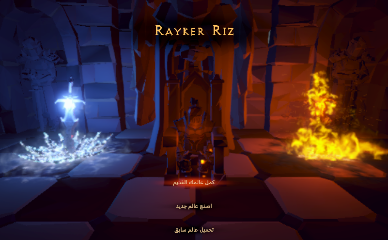
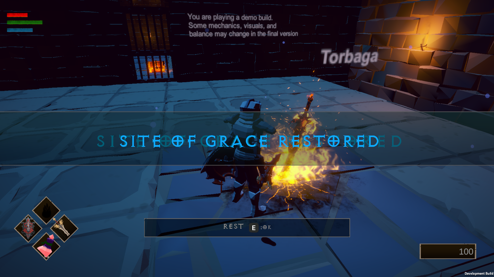
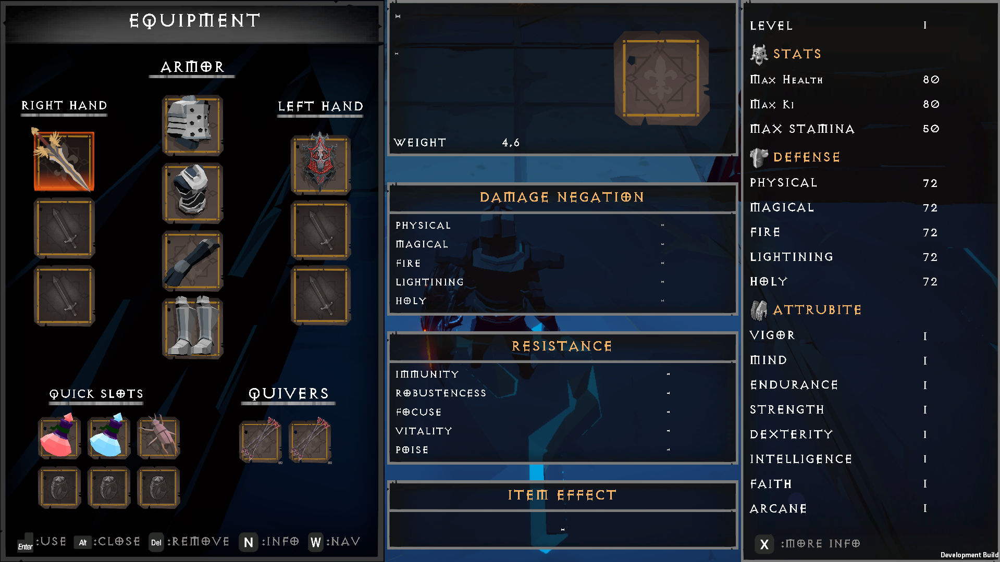
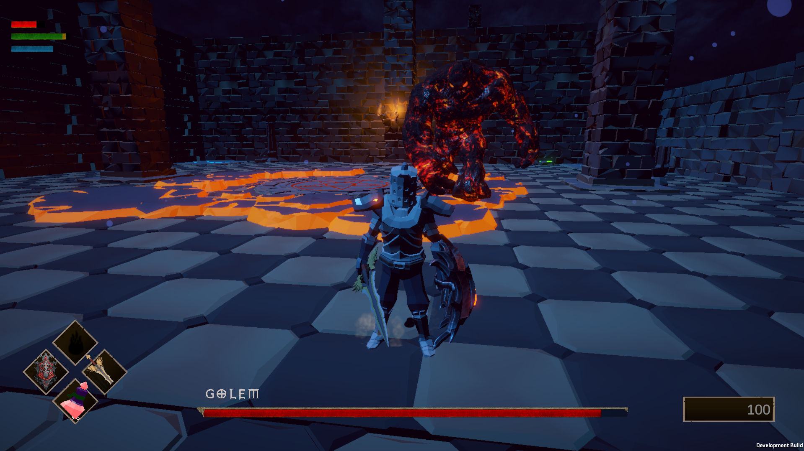

Character and tutorial
Create your character and learn the basic controls before entering the desert.
WORLD MAP
Use the numbered markers to find important places in this area.
 1
2
3
1
2
3
YOUR FIRST STEPS

Create your character and learn the basic controls before entering the desert.

Find the merchant near one of the Sites of Grace.

The blacksmith is near a different Site of Grace.
THE CURRENT ROUTE
The current playable journey starts with a short tutorial, crosses the desert, and leads to a dungeon and its boss.
THE DUNGEON BOSS

The Golem is the featured boss in the current playable route. Prepare your equipment before entering the dungeon, watch the boss, and look for a safe moment to attack.
CURRENT DEVELOPMENT BUILD
The game is still being developed, so these areas and features may change.